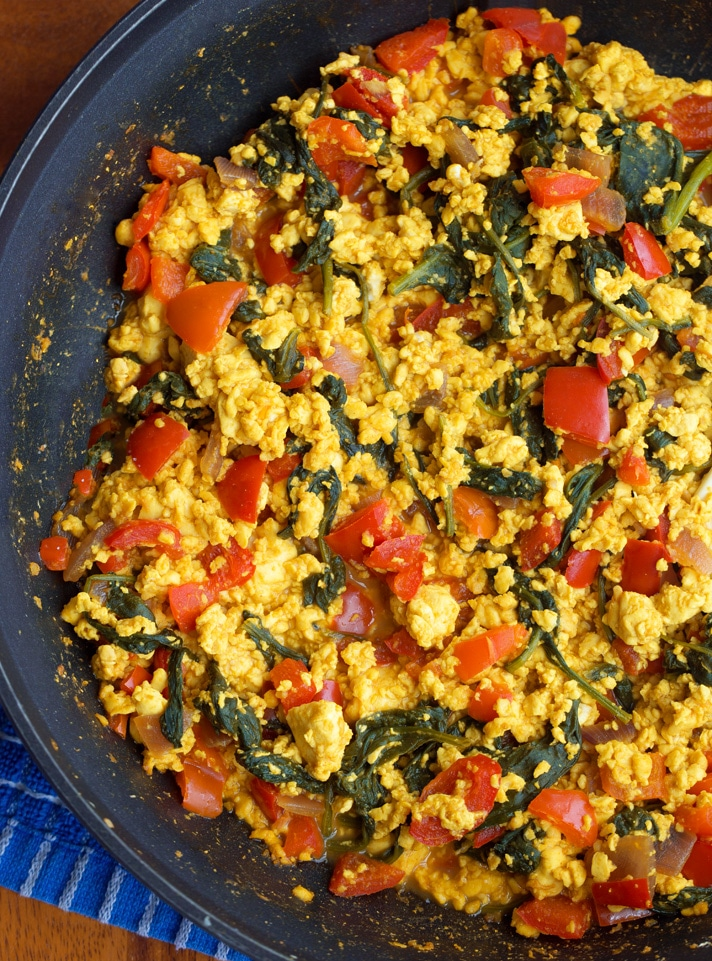

Tofu Scramble

Hearty tofu scramble with veggies
- 1 package extra firm tofu
- 1 cup crimini mushrooms
- Tumeric
- Garlic Powder
- Onion Powder
- Paprika
- Nutritional Yeast
- Water
- Avocado oil
- Pre-heat skillet on medium-high heat
- Chop mushrooms finely
- Drain excess water from tofu
- Add oil to pan and sautee mushrooms
- Crumble tofu into pan with mushrooms and sautee until they have some color
- Add in your seasonings and 1 tbsp of water and mix until evenly coated
- Heat until warm and then sprinkle nutritional yeast on top (gives a cheesy texture)
- Optional: add in veggies of choice for additional color and healthiness